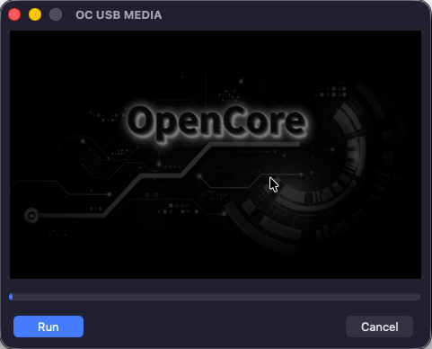
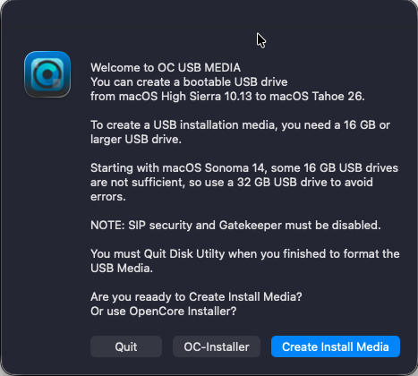

A utility for creating a macOS installation USB drive — from macOS High Sierra 10.13 all the way to macOS Tahoe 26.
You also have the option to install OpenCore after the post-installation process.
Create a fully bootable macOS installation USB drive with just a few clicks.
Supports every release from macOS High Sierra 10.13 up to macOS Tahoe 26.
Optionally install OpenCore as part of the post-installation process.
Build OC USB MEDIA from source in seconds.
Clone and build OC USB MEDIA: You need Xcode installed on your system.
A quick look at OC USB MEDIA in action.


Grab the latest release — no build required.
Download OC USB MEDIA